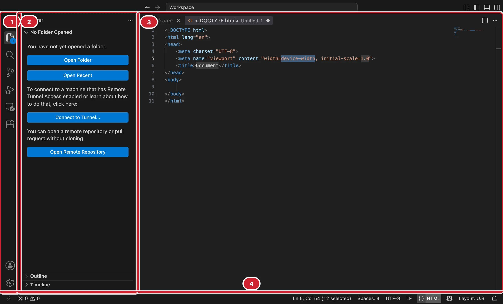
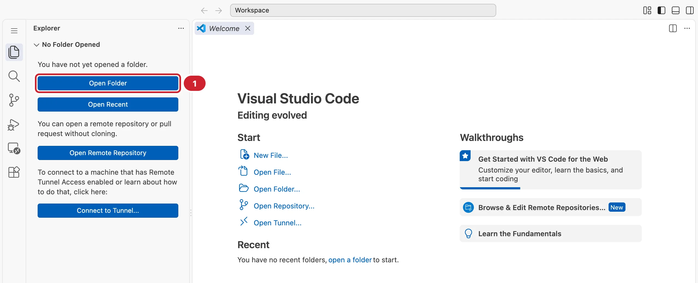
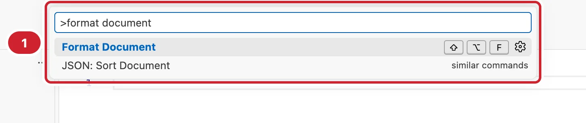
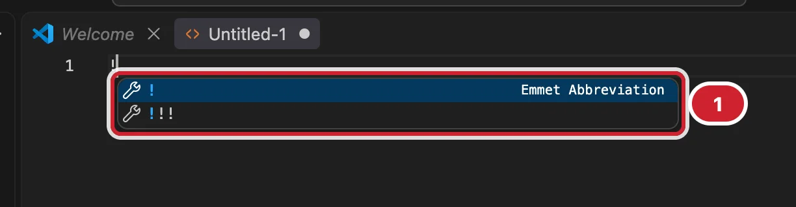
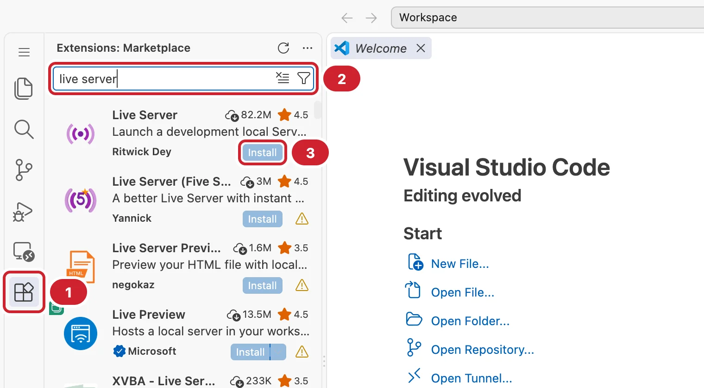
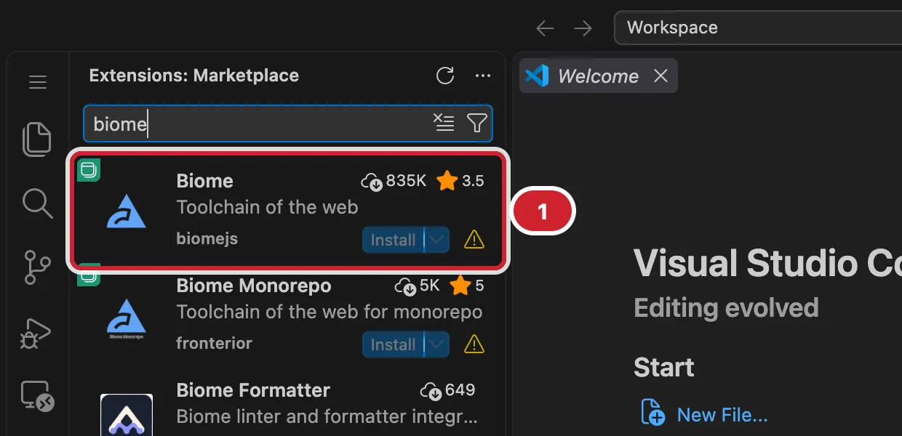
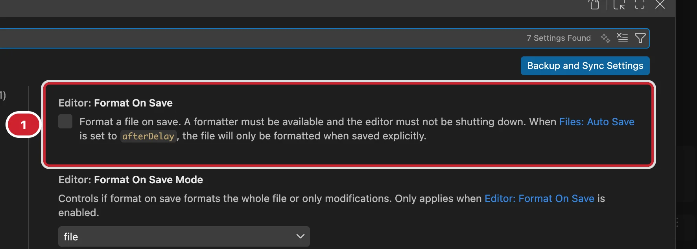

Модуль 0. Старт. Урок 3
Интерфейс, горячие клавиши, расширения
Фронтенд с нуля
Часть 1
Интерфейс, папка проекта и файлы
Редактор — ваше главное рабочее место
Сегодня делаем его удобным и быстрым


code .css/style.css в имени нового файла создаст и папку
Часть 2
Палитра, несколько курсоров и быстрые переходы

| Сочетание | Действие |
|---|---|
| ⌘S | Сохранить |
| ⌘/ | Закомментировать |
| ⌥↑ / ⌥↓ | Переместить строку |
| ⇧⌥↓ | Продублировать строку |
| ⇧⌥F | Отформатировать |
<li class="item">Кофе</li>
<li class="item">Чай</li>
<li class="item">Какао</li><li class="card">Кофе</li>
<li class="card">Чай</li>
<li class="card">Какао</li>Выделить item → ⌘D ⌘D → напечатать card
| Сочетание | Действие |
|---|---|
| ⌘← / ⌘→ | Начало / конец строки |
| ⌥← / ⌥→ | По словам |
| ⌘L | Выделить строку |
| ⇧⌘K | Удалить строку |
| ⌃G | К строке по номеру |
Часть 3
HTML сокращениями, Live Server и Biome

| Сокращение | Результат |
|---|---|
h1{Привет} |
заголовок с текстом |
.card |
<div class="card"> |
ul>li*3 |
список из трёх пунктов |
a[href=about.html] |
ссылка с адресом |
> — внутри, * — повторить, . — класс, {} — текст
ul>li.item$*3<ul>
<li class="item1"></li>
<li class="item2"></li>
<li class="item3"></li>
</ul>

Смотрите на автора и число скачиваний

{
"editor.formatOnSave": true,
"files.autoSave": "onFocusChange",
"editor.tabSize": 2,
"editor.wordWrap": "on",
"editor.linkedEditing": true
}⇧⌘P → Preferences: Open User Settings (JSON)
mary@MacBook-Air hello % lscss index.html about.html
⌃` или View → Terminal — сразу в папке проекта
Часть 4
Линтер, живой просмотр и история файла
~/dev/homeworkcode . → установить рекомендованные расширенияnpm installВолнистая линия → навести мышь → объяснение. Все ошибки: ⇧⌘M
mary@MacBook-Air homework % npx biome check index.htmlindex.html:9:7 lint/a11y/useAltText× Provide a text alternative through the alt, aria-label, or aria-labelledby attribute.
Файл → строка → колонка → правило → что не так
Go Live в строке состояния → http://127.0.0.1:5500
| Шаг | Что делать |
|---|---|
| 1 | Выделить файл в проводнике |
| 2 | Внизу боковой панели — Timeline |
| 3 | Щёлкнуть версию — сравнение «было — стало» |
| 4 | Правый щелчок → Restore Contents |
.html — внизу Plain Textnpm installСтраница с нуля — только клавиатурой и Emmet